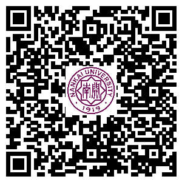
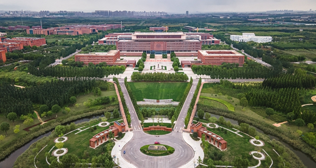
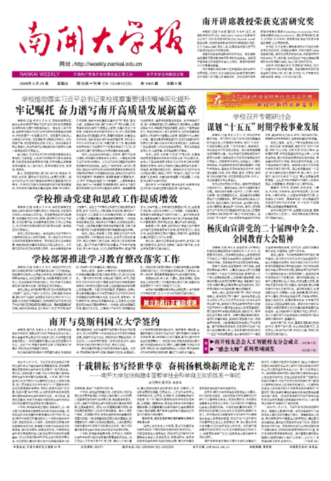
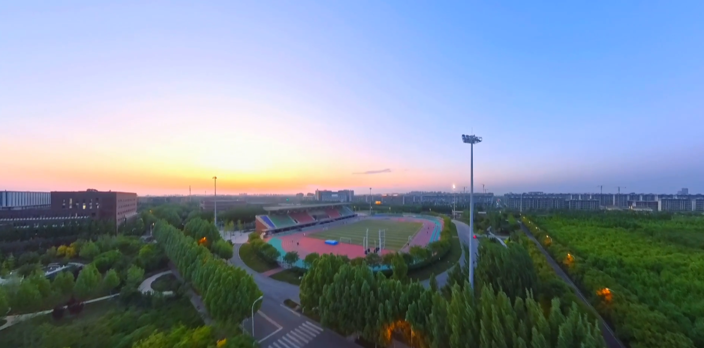

首页
南开要闻
媒体南开
南开校史
光影南开
南开故事
南开大学报
视频
广播
【专题】树立和践行正确政绩观学习教育
【专题】深入学习贯彻党的二十届四中全会精神
【专题】南开大学全国党建工作示范高校建设
【专题】南开大学中国式现代化乡村工作站
【专题】关注天开园
上一个
下一个
南开要闻
专家学者齐聚南开 共议“‘十五五’时期农业保险高...
2026届赴基层就业毕业生出征
天津市科学家精神舞台剧《选择》南开首演
学校召开党委常委会（扩大）会议暨党委理论学习中...
校领导为两院师生讲授“形势与政策”课
南开大学医药学科举办廉洁文化教育活动
第九届可持续运营与管理学术年会在南开大学举办
南开大学举办行政干部专题培训
媒体南开
新华社客户端：送你一张照片｜定格22名南开毕业生奔赴支教讲台前最美青春瞬间
China Daily：Tianjin hosts dragon boat race for university students
津云：第二届中共党史人物研究南开论坛举办
今晚报：南开大学队主场再捧男女队桂冠
今晚报：南开大学代表队斩获男子组、女子组双料冠军
天津日报：加快构建中国哲学社会科学自主知识体系
天津日报：2026年京津冀大学生海河龙舟邀请赛举行
天津日报：2026年京津冀大学生海河龙舟邀请赛举行
天津日报：不争网红做长红 津味绵长
天津日报：只有读纸质书才是深度阅读吗？
津云：展现青春力量！470名高校志愿者参与智博会志愿服务
中国新闻网：校企联手育良种 “庄浪丹参·南开一号”如何闯出富民新路子？
今晚报：全国创新争先奖揭晓 本市6人荣获奖状
天津教育报：全国优秀教师代表“教育家精神”2026年巡回宣讲活动在津举行 让教育...
光影南开

【组图】春风拂南开，繁花次第开
【组图】南开秋天的“含金量”
【组图】南开大学2025级新生开启逐梦新程
【组图】以青春之名，赴南开之约——202...
【组图】2025南开毕业典礼高光时刻
【组图】南开春韵：校园花开满园香，学...
综合新闻
多彩校园
南开故事
天津金融监管局纪委来校开展廉洁文化建...
南开大学与澳大利亚弗林德斯大学合作办...
药学院与鲁南制药洽谈产学研深度合作
生科院师生参加全国生物科学“基础学科...
南开团队助力庄浪擘画旅游环线建设蓝图
【学习教育】化学学院开展退休党员专题...
南开大学旅游与服务学院文旅领军人才创...
【关注天开园】传承实业报国薪火 南开科...
信传学院“导师有约”探讨“两创”视域...
南开大学国旗护卫队与中国人民解放军原...
哲学院举办“心宁·观己”疗愈文化节暨心...
商学院举办2026年春季实习就业双选会
“向阳计划”团队开展“红色育人+科学赋...
校史课程邂逅国粹艺术 感受爱国三问京剧...
经济学院赴深圳访企拓岗助推高质量充分就业
历史学院“导师有约”聚焦战国秦汉史史...
锲而不舍 译出风格 ——记翻译家臧传真先生
被叶嘉莹盛赞的图书管理员
一场跨越90年的问答
杰出校友和杰出楷模
勇于追求、践履学术真理的典范——纪念...
跨越国界的成长：一名“中俄融合体”的...
“新开湖”畔的勤奋笔耕者——追忆校报...
以哲学的方式为现实服务
南开大学报
视频
专题

【1502期】牢记嘱托奋...
【1501期】凝心聚力抓...
【1500期】全国大学生...
【1499期】以坚强党性...
【1498期】传达两会精...
【1497期】学校部署开...

【专题】树立和践行正确政绩观学习教育
【专题】深入学习贯彻党的二十届四中全...
【专题】南开大学中国式现代化乡村工作站
【专题】南开大学全国党建工作示范高校建设
【专题】深入贯彻中央八项规定精神学习教育
【专题】沉痛悼念叶嘉莹先生
新闻热线：022-23508464 022-85358737
投稿信箱：
nknews@nankai.edu.cn
本网站由南开大学新闻中心设计维护
Copyright@2014 津ICP备12003308号-1
南开大学
校史网
版权声明：本网站由南开大学版权所有，如转载本网站内容，请注明出处。